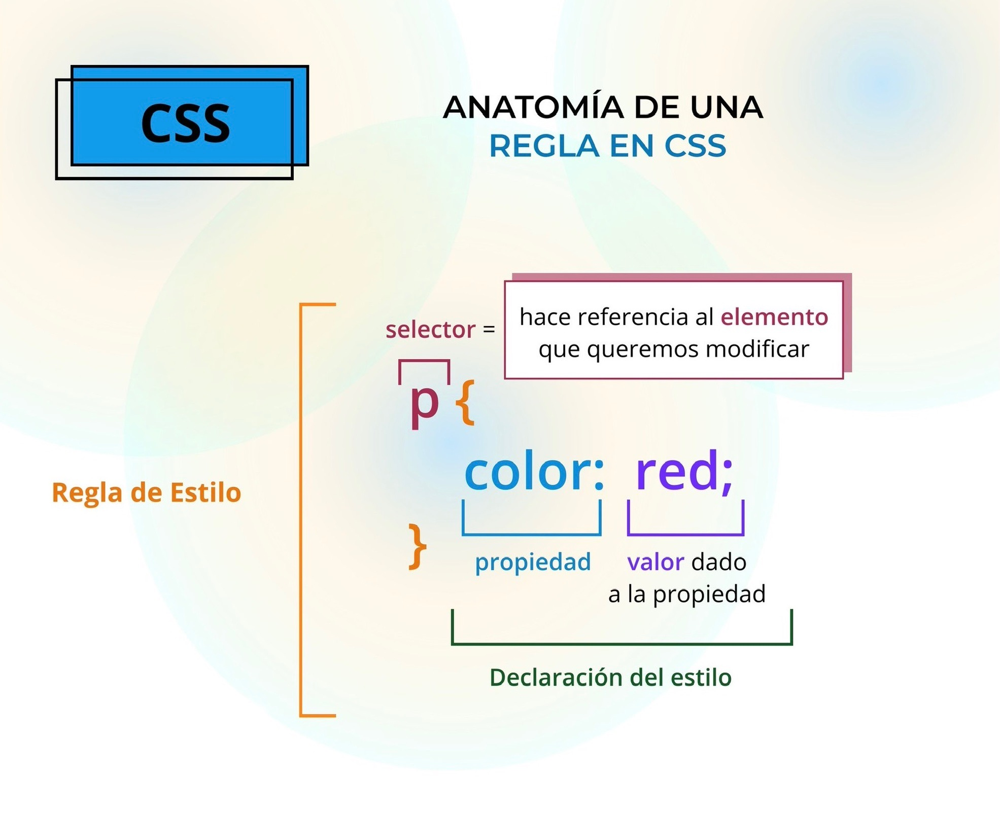

CSS Syntax
All CSS Simple Selectors

A CSS selector selects the HTML element(s) you want to style.
CSS selectors are used to "find" (or select) the HTML elements you want to style.
We can divide CSS selectors into five categories:
The element selector selects HTML elements based on the element name (body, p, h1, h5, a, div, etc.).
The id selector uses the id attribute of an HTML element to select a specific element.
The id of an element is unique within a page, so the id selector is used to select one unique element!
To select an element with a specific id, write a hash (#) character, followed by the id of the element.
The class selector selects HTML elements with a specific class attribute.
To select elements with a specific class, write a period (.) character, followed by the class name.
The universal selector (*) selects all HTML elements on the page.
Use our CSS Selector Tester to demonstrate the different selectors.